04 Chapter 04 — Capture: Cameras, Lenses, Shutter, Placement
The physics of getting footage your models can use: sensor geometry, motion blur, rolling shutter, and the placement math
4.1 Capture Is a Design Decision, Not an Accident
Every chapter in this book assumes footage. Almost none of the failure modes that follow are model failures — they are capture failures. A ball that is 83 pixels of motion blur is not undetectable because of a bad detector; it is undetectable because the shutter was 1/60s. A kitchen foot fault that a coach cannot see on review is not a camera-angle problem; it is a parallax problem from a 2.5m-tall camera. Capture is where you design in — or out — the questions your analysis will be able to answer.
The two sports in this book sit at opposite ends of the capture-contract spectrum, and the contrast is the lesson. In pickleball you usually own the camera: a 13.41m × 6.10m court, often indoors under LED light, and complete freedom to choose the sensor, lens, shutter, frame rate, and mounting position. Capture is a free design parameter you should optimize before the first model runs. In rugby league you usually do not own the camera: the analysis feed is a broadcast host feed of a 100m × 68m pitch, shot from a gantry you will never visit, with pan, tilt, zoom, shutter, and frame rate all fixed by a production crew optimizing for television, not for computer vision. Capture is a given you must calibrate around. Everything in this chapter is computed for both regimes.
Before anything else, run the numbers for your court or pitch and your camera. This chapter gives you the formulas, the worked cases, and the exact numbers from our lab.
Everything below is measured or derived from measured inputs: the FOV/shutter/parallax numbers come from our lab (experiments/c04-capture/outputs/capture-math.json), the fixture probe from ffprobe on our own clip, and the sport dimensions from the governing-body rulebooks (USAP Official Rulebook 2026; NRL Laws of the Game). Where a number comes from vendor reporting rather than our instruments it is marked [verify]. Vendor claims of "99% line-call accuracy" remain source-backed marketing until replicated — and the parallax math in section 4.4 is why the replication bar is a two-camera setup.
4.2 Sensor Geometry: What Covers the Court — and the Pitch
The fundamental camera equation for a flat scene is the horizontal field of view, which reduces to two formulas that answer every "what lens do I need" question in this book:
$$\text{HFOV} = 2 \cdot \arctan\left(\frac{d}{2f}\right) \qquad\qquad W = \frac{D \cdot d}{f}$$
where $d$ is the sensor width, $f$ the focal length, $W$ the scene width covered at distance $D$. Rearranged, the focal length required to cover width $W$ at distance $D$ is $f = D \cdot d / W$.
Sensor formats matter more than the stated lens: a phone "24mm" is 24mm equivalent — the physical sensor is ~9.8mm wide (1/1.28" class) behind a ~6.8mm physical lens. The same field of view needs an 8.8mm lens on a 1" sensor (13.2 × 8.8mm — the "1-inch" name is a Vidicon-tube artifact, not a dimension) and 15.7mm on APS-C. Because FOV depends only on the equivalent focal length, every cross-format comparison in this chapter is done in equivalent millimetres.
The scale gap between our two sports is the entire design problem in one number pair. Covering a pickleball court's 6.10m width from 12m behind the baseline needs a modest wide lens; covering a rugby league pitch's 68m width from a broadcast gantry 60–90m away needs a narrow telephoto. Our lab computed the broadcast case directly for an APS-C sensor (23.5mm wide): at 60m from the far sideline the required focal length is 20.7mm (HFOV 59.1°); at 90m it is 31.1mm (HFOV 41.4°). That is the optical envelope the NRL host feed is shot inside — and it is why the main match camera zooms to follow play rather than holding a static wide: at 21–31mm equivalent the ball (28cm) is a few dozen pixels, so the production tightens the shot for humans and your calibration inherits a different focal length on every frame.
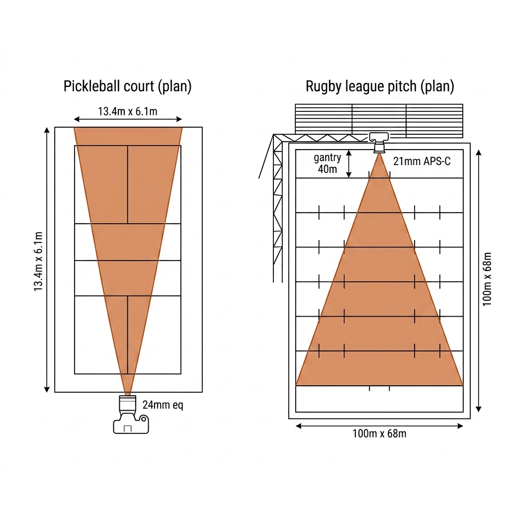
4.3 Worked Case: Pickleball Court Coverage (W1.2 Lab)
The court is 13.41m × 6.10m (44ft × 20ft, per USA Pickleball). A camera mounted behind the baseline needs to cover the full 6.10m width at the far baseline for line calls. Our lab computed, for a 1" sensor (9.6mm wide):
| Camera Distance to Far Baseline | Required Focal (1" sensor) | HFOV | Practical Example |
|---|---|---|---|
| 9.0m | 9.0mm | 37.4° | Fixed mini camera on back wall — tight but covers width |
| 12.0m | 12.0mm | 28.5° | Phone (1x) equivalent — typical gym wall mount |
| 16.0m | 16.0mm | 21.6° | Mounted behind spectators — needs a zoom or tele |
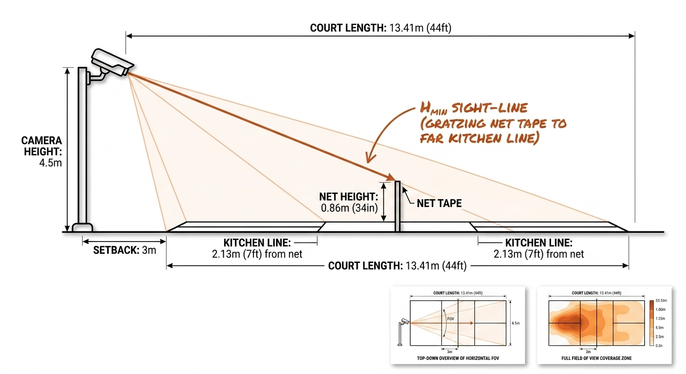
Interpretation: FOV is almost never the binding constraint behind a pickleball court — a 24mm-equivalent phone camera at 12m covers the court width three times over. The binding constraint is pixels on target. Computed for a 4K (3840px-wide) frame at the far baseline, 16.4m from the lens:
| Setup | Coverage at 16.4m | mm per pixel | Ball (74mm) | Verdict |
|---|---|---|---|---|
| 24mm-eq phone main | 24.6m | 6.4mm/px | ~12px | Detectable, marginal for spin/hole features |
| 48mm-eq (2× tele crop) | 11.9m | 3.1mm/px | ~24px | Good ball track, still full court width plus margin |
| 1080p mode (half resolution) | 24.6m | 12.8mm/px | ~6px | Don't: shoot 4K and downscale in post |
This is why SwingVision-class products ask you to place the phone on a tripod behind the court center and why pro pickleball consoles (PlaySight; Owl AI's broadcast-software line calling) use dedicated wide-angle optics. The copyable recipe from our lab: phone main camera, 4K, 48mm-equivalent crop, 4.5–5m pole, 3m setback, slight down-tilt → full court, ball ≥20px everywhere.
4.3b Worked Case: Rugby League — Broadcast vs Sideline (W1.2 Lab)
Rugby league inverts the pickleball answer. The playing surface is 100m × 68m plus in-goals (design length ~116m), and there are three realistic placements, each answering a different question.
Case 1 — halfway sideline pano (the rig you own). A Veo-class dual-lens 180° camera on a 3.8–7.3m tripod, 3–5m back from the halfway line (Veo's own setup guidance), captures the whole pitch in one 7680px-wide panorama at ~42.7px per degree. Our lab's pixels-on-target math:
| Target | Distance | Player (1.85m) | Ball (28cm) |
|---|---|---|---|
| Near sideline | 5m | 866px tall | 137px |
| Far sideline | 39m | 116px | 18px |
| Far corner | 58m | 78px | 12px |
Tactical-grade everywhere — shape, spacing, line speed, and runs are all resolvable — while ball and identity degrade past ~30m. This is exactly why Veo-class systems sell tactical analysis, not officiating: the geometry cannot support it, and no model upgrade fixes a 12-pixel ball.
Case 2 — end-on full pitch (training-ground DIY). From an end stand or scaffold 10m behind the dead-ball line at ~30m height with a 35mm-equivalent lens, the far-end coverage is ~130m, so the 68m pitch width occupies about half a 4K frame: 34mm/px → ball ~8px, player ~56px. Officiating-grade calls are impossible from one static wide; this shot answers shape and spacing questions only.
Case 3 — the broadcast gantry (the feed you ingest). The main NRL match camera is a manned PTZ on the halfway gantry, 20–30m high and 40–50m back, inside the 21–31mm (APS-C) envelope from section 4.2 — and it zooms to follow play. The consequence for the whole book: broadcast footage has a variable focal length per frame, so the homography chapters (6–7) must estimate calibration frame-by-frame rather than once per session. End cameras (18-yard and try-line positions) exist in the host production for exactly the geometry the gantry cannot see — low, near-axial views of the try line — but you receive only the one feed the director cuts to air.
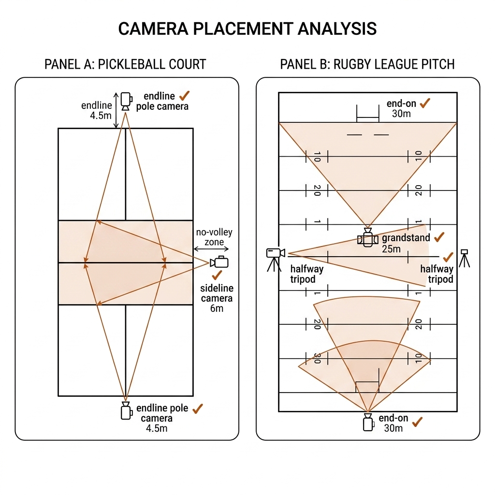
4.4 Elevation: The Parallax Trap for Foot Faults
A camera 2.5m up and behind the baseline sees the far NVZ line at an elevation angle of about 11.9° (same-side NVZ line at ~4.88m from the baseline camera). That low angle means the line is what the athletes' feet hide — exactly when you need to check foot placement during a volley.
The deeper problem is parallax. A ball 0.9m off the ground seen from a 2.5m camera has a projected position offset of 18cm at a 0.5m distance from the sideline. Our lab computed it directly:
| Quantity | Value |
|---|---|
| Camera height | 2.5m |
| Object height (ball above court) | 0.9m |
| Distance from sideline | 0.5m |
| Projection offset | 18.0cm |
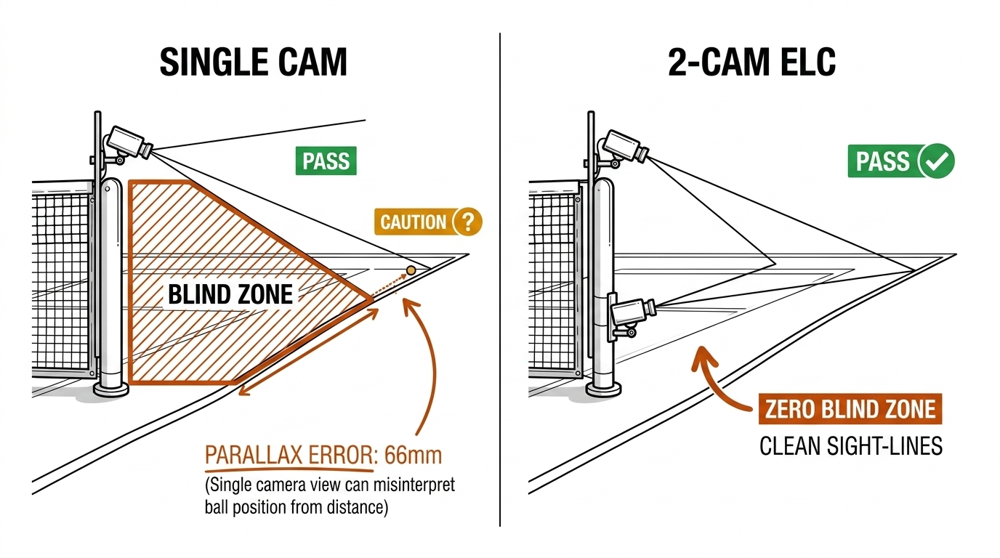
Eighteen centimetres is roughly the width of a pickleball; it is well inside the margin of a contested line call. From the lab's 4.5m-pole rig the error grows: a bounce at the far sideline (~8m lateral) shifts by 66mm — larger than the 5.08cm line width itself. Uncallable. The escape is geometric, not algorithmic: a net-post camera at ~1.1m looks along the line plane, so the across-line component of parallax collapses toward zero — the design PlayReplay exploits with two cameras per net post [verify per-model fps]. Conclusion: single-camera 2D position is fine for court-zone occupancy but mathematically insufficient for line calls — which is exactly why Chapter 14 exists (multi-view geometry / triangulation).
Rugby league's version of the trap is inverted. The gantry's 20–30m elevation is a feature for tactics: from 25m up and 45m back, the viewing angle across the 68m width keeps player spacing readable — high elevation is what makes broadcast footage the default input for shape analysis. But the same height makes grounding and try-line calls impossible from the gantry: a ball carrier's hand and the ball over the try line separate vertically, and parallax from 25m up projects them metres apart. That is why host productions add low end-on cameras for the try line, and why any RL officiating pipeline needs those feeds, not the main camera.
4.5 Shutter Speed vs Motion Blur: The Ball Wall Begins Here
Blur is $b = v \cdot t$ — velocity times exposure time. Nothing else matters. The ball moves at 20m/s on a hard drive (72km/h) and 31.3m/s on the record serve (Zane Navratil, 70mph, Guinness World Records 2024). At 1080p with ~250 pixels per metre at the near baseline, the blur equation in pixels is:
$$\text{blur}_\text{px} = v \cdot t_\text{shutter} \cdot \text{px/m}$$
| Shutter | Blur @ 20 m/s (smash) | Blur @ 8 m/s (dink) | Verdict |
|---|---|---|---|
| 1/60s | 83.3 px | 33.3 px | Ball is a streak — unusable |
| 1/250s | 20.0 px | 8.0 px | Marginal; ball center smeared |
| 1/1000s | 5.0 px | 2.0 px | Usable for trajectory models |
| 1/2000s | 2.5 px | 1.0 px | Ideal — but expensive (needs light/ND, high frame rate) |
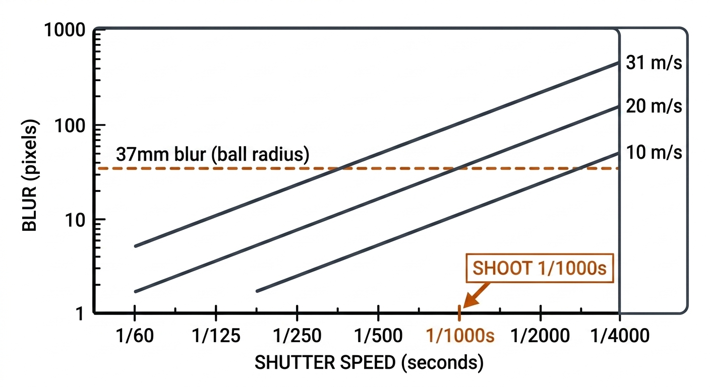
The rule of thumb, derived: keep blur under one ball radius (37mm) so the apparent center stays the true center, i.e. $t \le 37\text{mm}/v$. A 20m/s drive needs ≥1/540s; the 31.3m/s record serve needs ≥1/845s → standardize on 1/1000s for ball work. In millimetres of smear, the dual-sport table:
| Shutter | PB drive 20 m/s | PB serve 31.3 m/s | RL sprint 10 m/s | RL kick ~27 m/s [verify] |
|---|---|---|---|---|
| 1/60 | 333mm | 522mm | 167mm | 450mm |
| 1/250 | 80mm | 125mm | 40mm | 108mm |
| 1/500 | 40mm | 63mm | 20mm | 54mm |
| 1/1000 | 20mm | 31mm | 10mm | 27mm |
| 1/2000 | 10mm | 16mm | 5mm | 14mm |
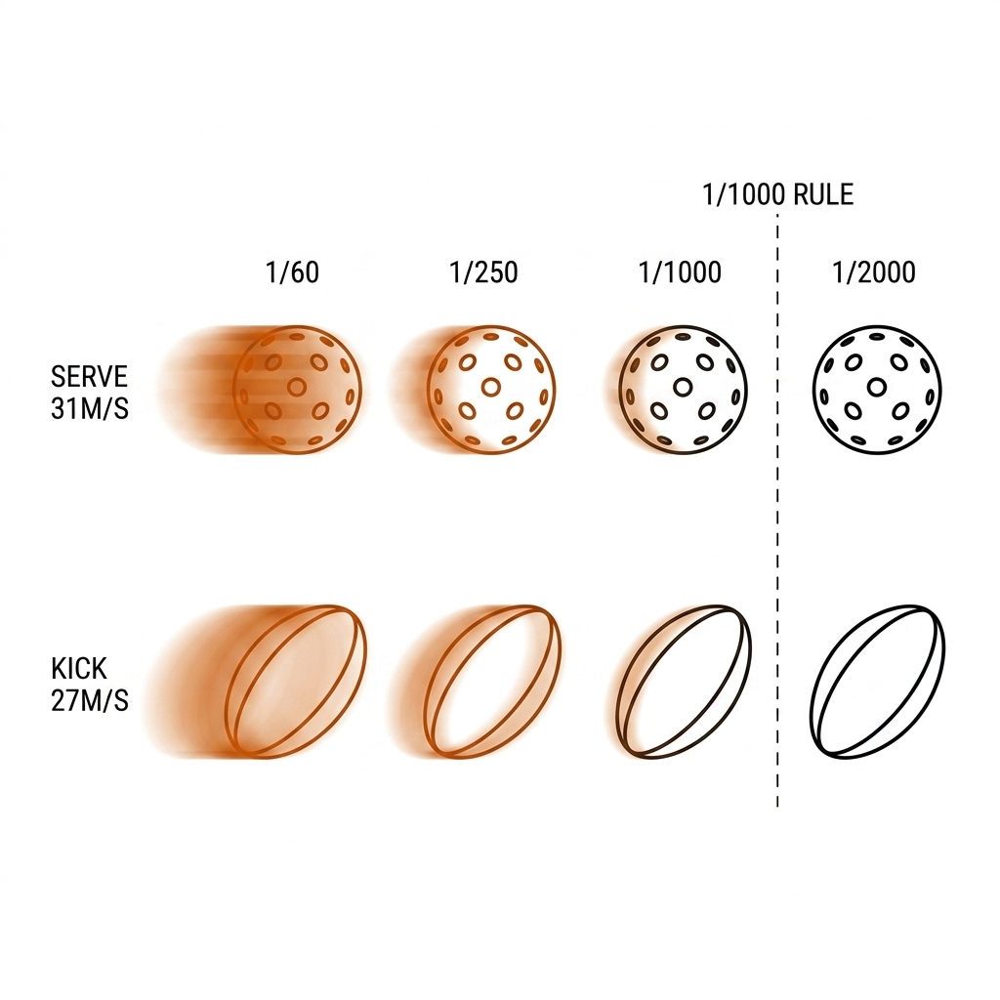
Two practitioner notes. First, a directional streak is not pure loss: streak length divided by exposure time is velocity, so a 43px streak at 1/250s is usable for speed estimation even though it destroys centroid accuracy and spin features. Second, the cost side: 1/1000s is five stops darker than 1/30s, so indoor pickleball venues push ISO into noise territory — the shutter budget is paid in light (section 4.7), while outdoor rugby league in daylight pays nothing. Broadcasters shoot sport at 1/250–1/500s because it looks natural to humans; their tradeoff is not yours. Set the shutter for the fastest object you care about, not the subject.
This is the root cause of the "Ball Wall" from Chapter 12. Per-frame detectors fail on blurred balls, not just small ones. Set the shutter first; change the detector only after the footage is clean.
4.6 Frame Rate and Temporal Aliasing
Shutter fixes within-frame smear; frame rate fixes between-frame sampling. At 25–30fps the ball moves 0.67–0.8m per frame at 20m/s — and 1.04m per frame at the 31.3m/s record serve: 14 ball diameters between frames. If the frame time is longer than the ball's crossing time of a small region, the ball can skip entire sectors of the court between frames. Displacement and the probability of catching a ~4ms ball–paddle contact window at all:
| fps | mm/frame @ 31.3 m/s | Ball diameters/frame | P(catch contact frame) |
|---|---|---|---|
| 25 | 1,252 | 16.9 | 10% |
| 30 | 1,043 | 14.1 | 12% |
| 60 | 522 | 7.0 | 24% |
| 120 | 261 | 3.5 | 48% |
| 240 | 130 | 1.8 | 96% |
| 340 | 92 | 1.2 | ~100% |
The 340fps row is not hypothetical: Hawk-Eye tennis runs ~10–18 cameras at ~340fps for its cited ~2.6–3.6mm triangulation error [verify current figures — secondary reporting; the ITF approval criterion of ≤5mm is documented].
The rugby league comparison reframes the same math. The RL ball is a 28cm prolate spheroid — 3.8× the pickleball's diameter — so it tolerates proportionally fewer frames. A strong punt kick at ~27m/s [verify] travels 450mm/frame at 60fps, just 1.6 ball lengths, versus the pickleball serve's 3.5 diameters per frame even at 120fps. Per-diameter, broadcast 50–60fps rugby footage is better sampled than 120fps pickleball footage. The catch is that you don't choose: Australian broadcast is a 50Hz family (25/50fps) heritage, so the RL ball at 50fps moves 540mm — 1.9 ball lengths — and the frame rate is whatever the host feed carries. Ball tracking from broadcast rugby is therefore a tracking-association problem (Chapter 9), not a capture upgrade. Where you do rig the camera — training-ground skill clips — the same rule as pickleball applies: 120fps floor for contact work, 240fps if you want the kick contact frame guaranteed.
Note the numerical reality of OUR fixture: the pb-003 derived clip is actually 1920×1080 @ 30fps, AV1 codec, 1,786 kbps (probed 2026-08-30) — not the 25fps the earlier experiment metrics assumed. Every pipeline downstream of this fixture inherits that capture reality. Options that buy real margin: 60fps (halves inter-frame travel), 120fps (line-call region work, though rolling shutter constraints apply), and 240fps slow-mo for the highest-velocity examinations. Each doubles the data volume; the ingest chapter (C05) is where you pay for it. One warning: check whether a "slow-mo" mode is true capture or optical-flow interpolation — interpolated frames hallucinate ball positions and must never feed a measurement pipeline [verify per-device].
4.7 Rolling Shutter, LED Flicker, Lighting, and Codecs
- Rolling vs global shutter: phone and most mirrorless sensors read rows in sequence over a readout time $t_r$ — ~5ms on recent phone sensors [verify per-model; community-measured], 15–30ms on older full-sensor mirrorless. During 5ms, a 31.3m/s serve moves 156mm: the ball's top and bottom rows are captured 156mm apart in world space, rendering a skewed ellipse — and worse, different rows of the same frame disagree about court geometry, so the homography is time-varying within the frame. At 25ms that shear is 782mm, nearly a metre. Global-shutter cameras (Sony A9 III, 4K120 uncropped, $5,999; machine-vision Pregius sensors) are the money-no-object fix; rolling-shutter-aware pipelines are the pragmatic one. You can measure your own $t_r$ by filming a known-frequency LED strobe and counting bands.
- LED flicker — the indoor pickleball tax: LEDs on AC mains pulse at 2× mains frequency — 100Hz in Australia (50Hz), 120Hz in the US (60Hz) — and PWM-dimmed fixtures are worst at low dim levels. Rolling shutter turns this into moving dark bands. The trap: the flicker fix is shutter = integer multiple of the flicker period (1/100s in 50Hz venues), but section 4.5 demands 1/1000s — which is exactly 10.0 cycles at 100Hz (benign in Australia) and 8.33 cycles at 120Hz (bands badly in the US). The mitigation ladder, in order: (1) get flicker-free light — ask the venue for full brightness, PWM flicker is worst dimmed; (2) lock shutter to a multiple so bands are static rather than rolling (static bands are maskable in CV); (3) accept 1/100–1/120s and give up ball blur — fine for pose/tactics, not ball tracking. The 60-second venue test: record 10s at 1/1000s under match lighting and scrub frame by frame for bands.
- Outdoor rugby league lighting is the easy case — until night: daylight makes 1/1000–1/2000s free, and stadium floodlights for night matches are engineered flicker-safe for broadcast because the host production cannot tolerate banding on air. When you ingest the host feed, lighting is solved upstream; when you rig a training-ground camera under club LEDs, run the same 10-second test.
- Codec & bitrate: our pb-003 clip is AV1 at 1,786kbps — that is a YouTube re-encode, not a capture product. For your own footage: H.264 or HEVC 4:2:2 10-bit at 50+ Mbps for 4K60; AV1 is fine for delivery, not ground truth. GOP structure matters for CV throughput: long-GOP (H.264/HEVC) stores most frames as motion-compensated deltas, so random access to frame n decodes back to the previous keyframe — the #1 silent cause of off-by-a-few-frames labels in sport datasets. All-Intra (ProRes, XAVC S-I) decodes any frame standalone, at a storage price: 1h of 4K60 ProRes 422 HQ ≈ 793GB; the same hour in HEVC 10-bit ≈ 9–14GB. Color: most CV models expect sRGB; iPhone default video is Dolby Vision (10-bit PQ), and feeding a PQ frame raw into an sRGB-trained model applies an unknown per-frame tone curve — brightness distribution shift, crushed shadows [verify magnitude with a controlled experiment]. Shoot Rec.709 where possible, or tone-map deliberately (section 4.8b).
4.8 Camera Tiers
| Tier | Examples | Strength | Weakness |
|---|---|---|---|
| Phone (single) | iPhone 15/16/17 Pro (4K120), Pixel | You own it; app ecosystem (SwingVision, PB Vision); 17 Pro + Blackmagic ProDock adds genlock/timecode ($295) | Rolling shutter; small-sensor lens limits; battery/heat |
| Compact camera | Sony ZV-1 (1"), GoPro 13 (2.7K240) | Good lens; manual exposure; price-accessible | GoPro fisheye distorts court geometry |
| Fixed court cam | PlaySight (~$10–15k/court), Veo Cam 3 ($1,299 + sub), Insta360 X5 (~$550) | Long-duration reliability; multi-cam sync; auto-tracking; Veo's 180° pano is the RL training-ground default | Cost; vendor lock; cloud dependency (Veo has no raw SD pull [verify export API]) |
| Broadcast OB | NRL host feed, 50–60fps PTZ rigs, gimbal follow cams, EVS slomo | Genlocked, phase-locked, flicker-safe, zoom into play; broadcast-grade picture | Camera motion + variable zoom = per-frame calibration liability (Ch. 7); you get one cut feed, not the iso cameras; cost is quote-only [verify] |
4.8b The Ingestion Pipeline: From Stream to Dataset
Capture ends at the card or the SDI cable; ingestion turns it into something a pipeline can trust. The lab pattern is boring on purpose: capture long-GOP HEVC for economy; transcode analysis clips to All-Intra once. On the M4 Max, VideoToolbox decodes HEVC 10-bit and encodes ProRes in hardware, so a 1080p60 stream or 4K60 file transcodes faster than real time. The stages, each with its failure mode:
- Offload with verification. Checksum every file on copy, keep two copies before cards are wiped. A corrupted card discovered after the session is unrecoverable data loss, not an inconvenience.
- Manifest at capture time. File naming
YYYY-MM-DD_venue_camA_fps_shutter_codec.extplus one metadata row per file — camera model, equivalent mm, height/setback distances, fps, shutter, ISO, codec, color mode. A photo of a filled whiteboard card per camera is enough; Chapter 5 builds the dataset on top of this row. - Transcode for access pattern, not storage. Long-GOP for archive; ProRes 422 or image sequences for anything frame-indexed (training, evaluation, labeling). Frame-accurate seeking on long-GOP files is how off-by-three labels happen.
- Tone-map HDR masters before inference. Dolby Vision/HLG masters feed models only after conversion to SDR BT.709.
- Broadcast ingest (RL). Host feed via DeckLink/UltraStudio SDI/HDMI into ProRes 422 HQ analysis masters. Host-feed latency (30–100ms through HDMI capture, variable) is irrelevant for post-hoc analysis — but it is never usable as a multi-camera sync reference (section 7 of the research dossier; phone clocks drift ~1ms/min ≈ 3 frames per hour at 30fps, so clap-sync at both ends of any session over 20 minutes).
# FOV answer in one line (width covered at distance D):
# W = D * sensor_width / focal
python3 -c "print(16.4 * 9.6 / 12.0)" # -> 13.1m covered by 12mm on a 1in sensor at 16.4m
# HDR -> SDR tone-map before model inference (M4 Max, hardware decode):
ffmpeg -i master_dv.mov -vf zscale=t=bt709:m=bt709:tonemap=hable,format=yuv420p \
-c:v hevc_videotoolbox -b:v 25M analysis.mp4
# Long-GOP capture -> frame-accurate analysis master:
ffmpeg -i capture_hevc.mov -c:v prores_videotoolbox -profile:v 2 analysis.mov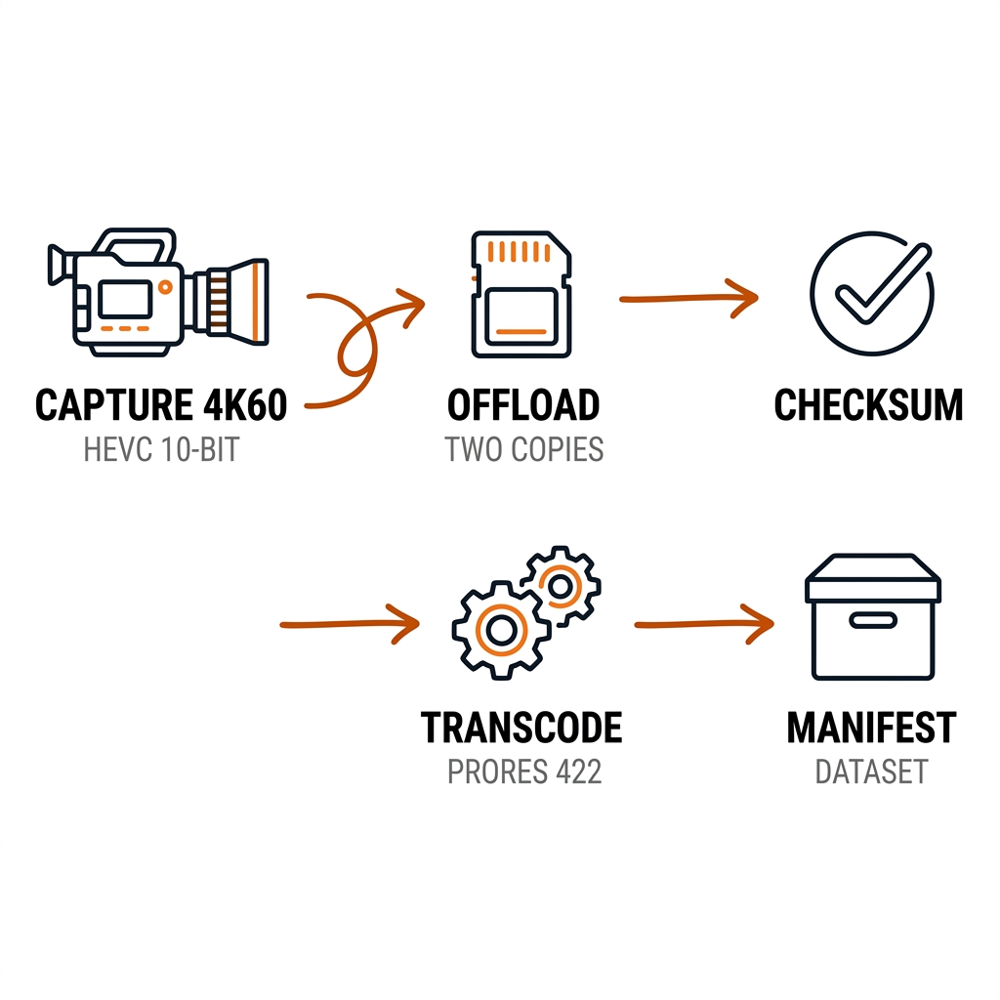
4.9 The Capture Checklist
- Define the analysis question FIRST (line calls? foot faults? ball trajectory? team shape? — each has different camera requirements).
- Work the FOV math: sensor width, distance, subject width (use the lab's formula; don't guess) — then check pixels on target for the smallest object you care about.
- Shutter ≥ 1/1000s for any ball tracking (either ball, either sport); 1/2000s if the budget allows. Pose-only work can relax to 1/250–1/500s.
- Frame rate from the event window, not the deliverable: 30fps minimum for tactical views; 60fps for ball work; 120fps+ for contact events; 240fps for line-call-grade review.
- Placement: as low as the rules allow to reduce parallax (net-post height for pickleball line calls; end-on low cameras for the RL try line); fixed position for calibration stability whenever you own the rig.
- Indoor: run the 10-second 1/1000s flicker test; if banding, apply the ladder — full-brightness lights → locked flicker-multiple shutter → accept static bands → trade away ball blur last.
- Color: Rec.709, 4:2:2 10-bit if possible; tone-map HDR to sRGB before models; keep the HDR master only for human deliverables.
- Sync: clap/flash at start AND end of every session (measure drift, ~1ms/min on phones); re-sync every 15–20 minutes; never trust HDMI latency as a sync reference.
- Rugby league specifics: halfway tripod 3.8–7.3m high, 3–5m back, wind-braced for tactical pano; broadcast analysis ingests the 50Hz-family host feed and calibrates per frame — do not assume static focal length.
- Hygiene: checksum on offload, two copies before wipe, manifest row per file, filename carries venue/camera/fps/shutter/codec.
- Mic: even a phone mic captures paddle/ball or boot/ball contact — audio is a free event sensor (Ch. 15) and the cheapest cross-camera sync signal you own.
4.10 Transfer Note: Rugby League Broadcast Capture
Rugby League changes the capture contract in three ways, and all three are measured constraints of the domain: (1) you do not own the camera — the broadcast OB controls pan/zoom, which means capture parameters (shutter, FOV, height) are fixed by the production, and your calibration instead has to adapt per frame (chapters 6–7); (2) scale is 15× the pickleball court — the 100m × 68m pitch at 60–90m from the broadcast gantry needs 21–31mm (APS-C) focal equivalents to fill the frame with play, per our lab's math; (3) line calls are less demanding but offside is more demanding — the 10m retreat line tolerance (~30cm) is an order of magnitude looser than a pickleball line call, but the check is against a moving reference (the PTB point), which capture must resolve at 25fps with 26 players. The honest verdict: for rugby, capture is a given you must calibrate around; for pickleball, capture is a free design parameter you should optimize before the first model runs.
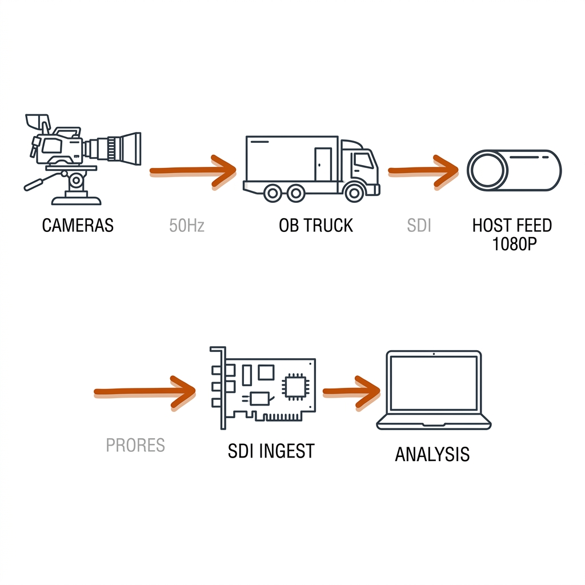
The broadcast chain also explains what the feed is: genlocked, phase-locked, flicker-safe cameras mixed live to a single 1080p (50Hz in Australia) program feed, with the iso recordings, slomo channels, and end-on try-line cameras staying in the truck. One cut feed means your analysis sees what the director chose — a tight follow shot during the run, a wide only at the play-the-ball. Any spatial method on broadcast RL footage must therefore survive shot changes, zoom ramps, and replays interleaved with live frames; the eventing chapter (19) treats those as first-class inputs, not noise.
4.10b Honest Limits: iPhone 4K vs Pro Broadcast
The lab's own fixture is the honesty anchor. Our pb-003 derived clip — the clip several downstream chapters' metrics were computed on — is 1920×1080 @ 30fps, AV1, 1,786kbps, 955 frames: a YouTube re-encode of someone else's capture. By this chapter's own math it is undersampled for contact events (12% contact-catch probability at a serve), long-GOP compressed at a delivery bitrate, and shot with unknown shutter and unknown elevation. It is adequate for the tactical and pipeline demonstrations it is used for, and inadequate for line-call or spin claims — and the book labels its evidence accordingly rather than pretending otherwise.
The same honesty applies to the tier ladder. A $1,099 iPhone 17 Pro shoots 4K120 Dolby Vision that is genuinely better sampled than the NRL host feed (50Hz, interlaced heritage) — for the one court it is pointed at, from the one position you mounted it. What the phone cannot give you is the gantry's elevation, the end-on try-line angle, genlocked multi-camera phase, or a director cutting between them. Conversely, the broadcast feed cannot give you 120fps, a 1/1000s shutter, or a fixed calibration. Neither is "better"; they answer different question sets, and the capture checklist's first item — define the analysis question first — is what chooses between them. The known unknowns we carry forward as [verify]: per-model phone rolling-shutter readout times, PlayReplay's per-camera fps, Hawk-Eye's current camera count, and the measured accuracy delta of feeding HDR frames to sRGB-trained models. Each has a lab recipe attached in section 4.11.
4.10c The 10 Capture Use Cases: A Decision Framework
The sections above give the physics; this section puts it to work. Ten concrete capture decisions, organized into three groups: A. Rigs You Own (UC 01–04) — the placements and mounts you control; B. Light and Time (UC 05–08) — the exposure and sampling decisions that decide whether the ball survives; C. Feeds and Sync (UC 09–10) — the multi-camera and ingest plumbing that downstream chapters build on. Each case states the practical problem, the mechanism with its math, a figure, a pickleball and a rugby league application, and a payoff. Evidence labels follow the book convention: measured (lab), source-backed (vendor/paper), [verify] (practitioner value, not established).
Group A: Rigs You Own (01–04)
UC 01 — The Pickleball Endline Camera at 120fps
The problem. A coach wants every rally on one court captured well enough that later chapters can track the ball, lift pose, and review kitchen foot faults — without a crew. The mechanism. One phone on a pole does it, but only inside a tight geometric envelope: pole height $H = 4.5$–$5$m clears the net-tape sight-line to the far kitchen line ($H_{\min} = 0.86(1 + L/2.13)$, section 4.4's inequality), a 3m setback keeps the vertical span inside a 24mm-equivalent lens (41.0° required vs 45.7° available), and a 48mm-equivalent crop puts $\ge 20$px on the ball at the far baseline (3.1mm/px, section 4.3). Frame rate is the last dial: 4K120 catches the ~4ms paddle–ball contact window in ~48% of rallies versus 12% at 30fps (measured math, section 4.6). The recipe: 4K120, 1/1000s, 48mm-eq, 4.5–5m pole, 3m setback, locked exposure.
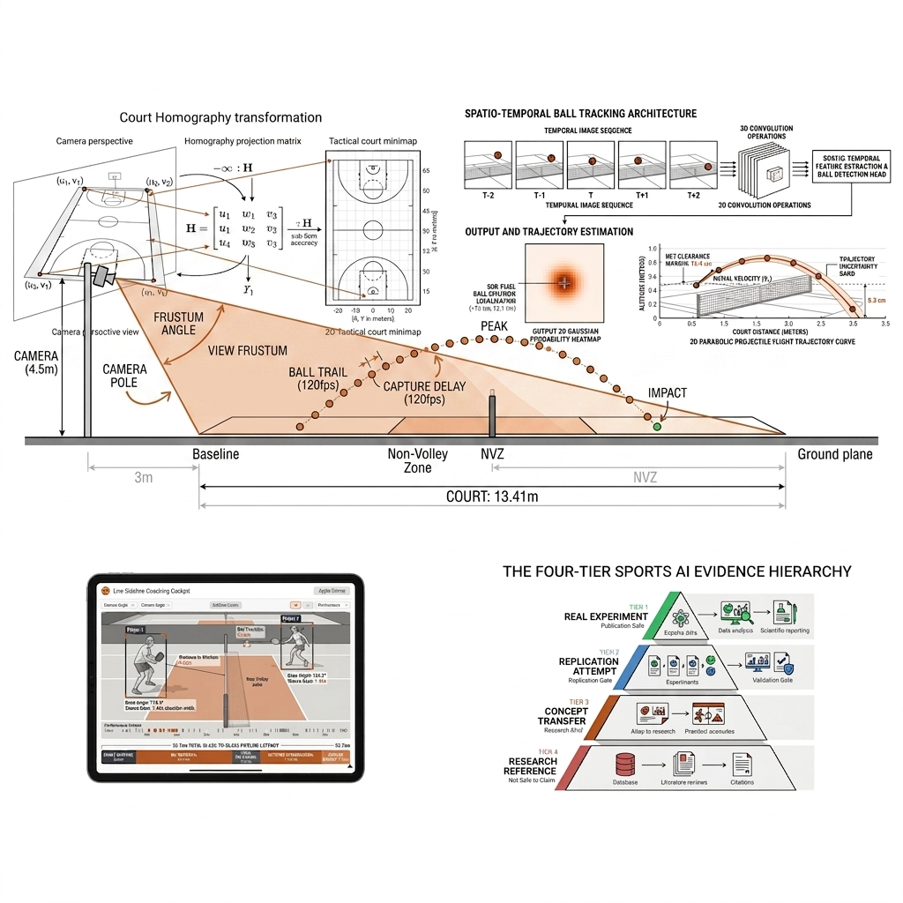
Payoff: every downstream chapter that touches pickleball (8 detection, 9 tracking, 11 pose, 12 ball) inherits footage that is actually analyzable — the rig is the cheapest accuracy upgrade in the book.
UC 02 — The Rugby League Sideline Camera: Covering 100m in One Frame
The problem. A club analyst needs whole-pitch shape — line spacing, retreat speed, kick-chase coverage — from a training ground with no broadcast infrastructure and a sub-$2k budget. The mechanism. The pitch is 100m × 68m; no single rectilinear lens covers it at tactical resolution from ground level, so the answer is a dual-lens 180° panorama (Veo Cam 3 class, 7680px stitched width ≈ 42.7px/°) on a 3.8–7.3m tripod, 3–5m back from halfway. The pixels-on-target math (measured, section 4.3b) sets the honest promise: 866px on a player at the near sideline, 116px at the far sideline, 78px at the far corner — tactical-grade everywhere, ball degraded past ~30m. FOV here is the product: $W = D \cdot d / f$ with a stitched sensor means the constraint shifts from lens choice to tripod height and wind bracing.
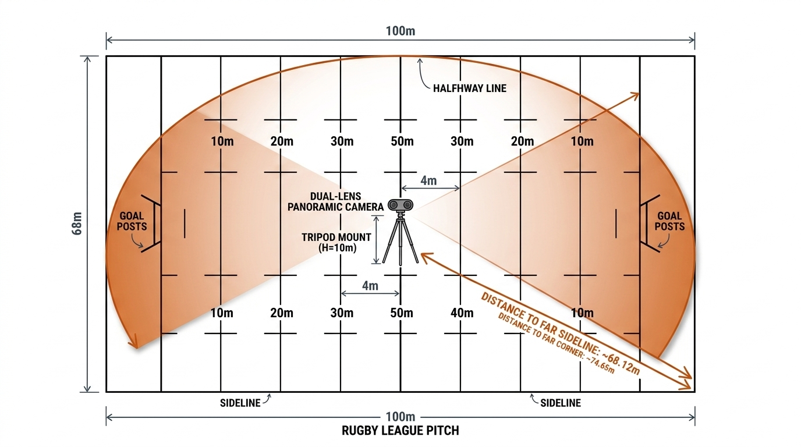
Payoff: the tactical chapters (22–23) get a repeatable, ownable RL data source whose known limits (12px ball at 58m) are stated up front instead of discovered after a season of filming.
UC 03 — The Broadcast Chain: Ingesting a Feed You Do Not Control
The problem. For NRL analysis the footage already exists — but it arrives as one cut program feed, and every upstream decision was made for television. The mechanism. The chain runs: stadium cameras (genlocked, 20–30m gantry plus end-on and try-line positions) → OB truck vision mixer → host feed (1080p, 50Hz family in Australia) → your SDI/HDMI capture (DeckLink/UltraStudio) → ProRes 422 HQ analysis master. The flow has roughly three dozen documented handoffs in a full host production [verify — production runbooks are quote-only and vendor-confidential]; the one that matters to you is the last. Two consequences are load-bearing for this book: the main camera zooms to follow play, so focal length varies per frame and chapters 6–7 must calibrate continuously; and HDMI/SDI capture adds 30–100ms of variable latency, fine for post-hoc analysis, useless as a sync reference.
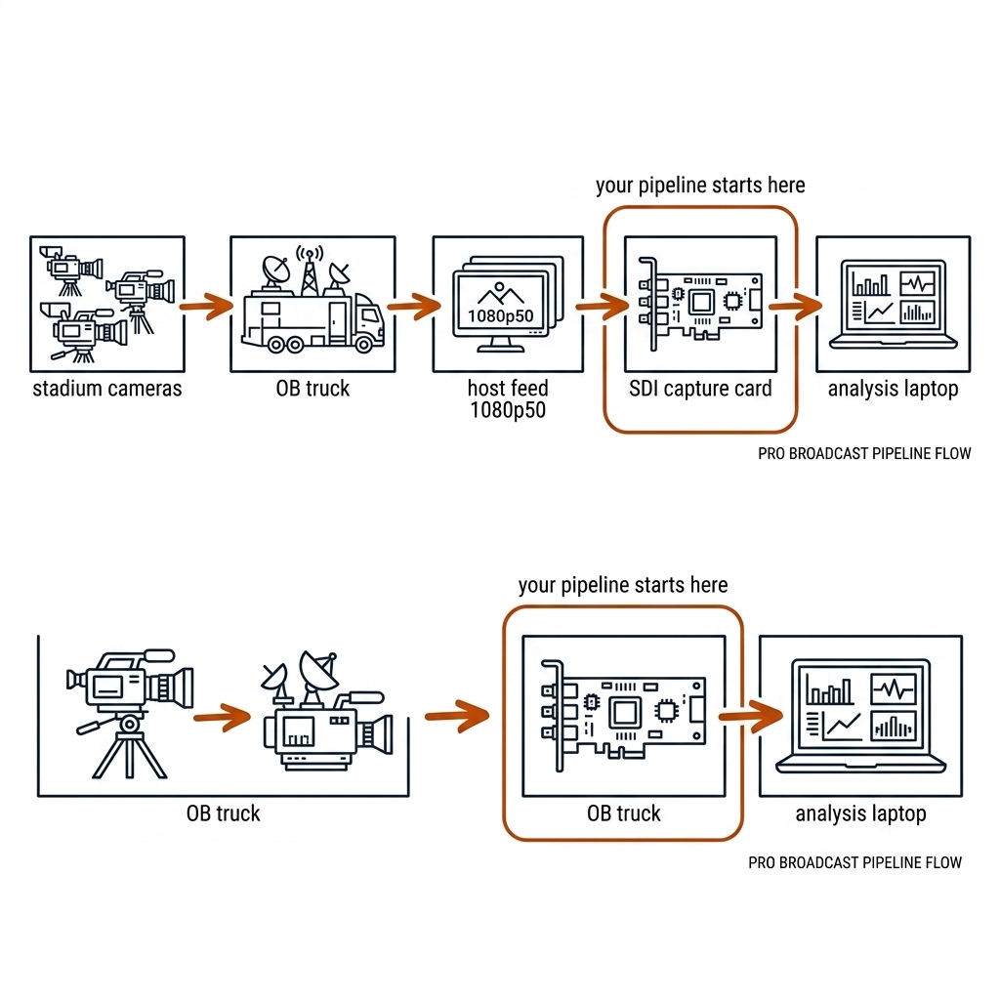
Payoff: the analyst stops fighting the feed and starts engineering around it — per-frame calibration, shot-change detection (Chapter 19), and All-Intra transcodes turn a television product into a dataset.
UC 04 — Handheld vs Mast: The Fence-Mount Trap
The problem. The default pickleball filming setup at most clubs is a phone clipped to the fence at ~2.4m, or a parent holding it at chest height. Both feel adequate; both are structurally blind. The mechanism. The far kitchen line sits at grazing incidence from any low camera: from 2.4m the sight-line over the 0.86m net tape intersects the court short of the far NVZ line, so foot faults on the far side are geometrically invisible — not occluded by players, but absent from the image. The elevation inequality from section 4.4 is the whole story: $H_{\min} = h(1 + L/2.13)$ gives 3.57m even standing on the baseline, and 4.78–5.11m at a realistic 3m setback. Handheld adds a second failure: uncontrolled camera motion breaks the fixed-homography assumption every court-mapping chapter relies on. A $60 pole is the difference between footage that can answer foot-fault questions and footage that never will.
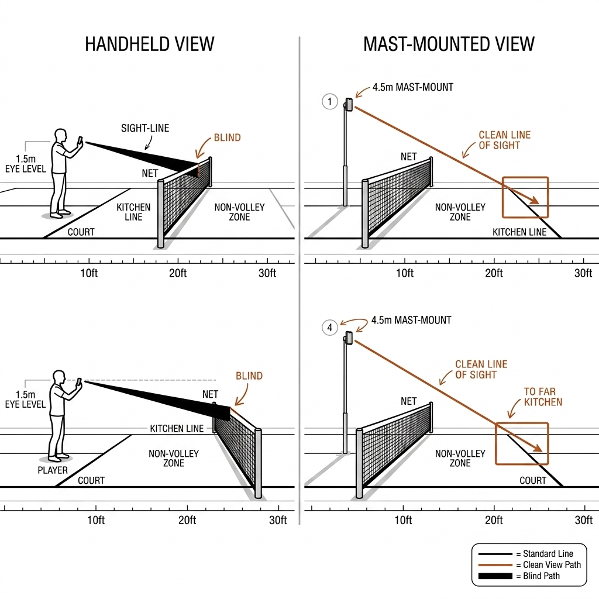
Payoff: one inequality ($H_{\min}$) explains most "why can't the model see it" support requests — check elevation before touching a single model weight.
Group B: Light and Time (05–08)
UC 05 — Stadium Lighting: The RL Night Game
The problem. Night rugby league under floodlights is the RL analyst's bread and butter, and the first instinct — the lighting is dim, so open the shutter — is exactly wrong for analysis. The mechanism. Broadcast-grade stadium floodlights are engineered flicker-safe because the host production cannot tolerate banding on air, so when you ingest the host feed the lighting problem is already solved upstream; the broadcast shutter (1/250–1/500s) is a look decision, not a capture limit. For your own training-ground rig under club LEDs the math is the exposure triangle with a floor: holding 1/1000s at night costs roughly five stops versus 1/30s, which is paid in ISO noise — and 8-bit 4:2:0 chroma noise at distance is what degrades team-color classification first (section 4.7). The honest rule: at night, drop the ball work and shoot 1/500s for shape, or light the drill area properly.
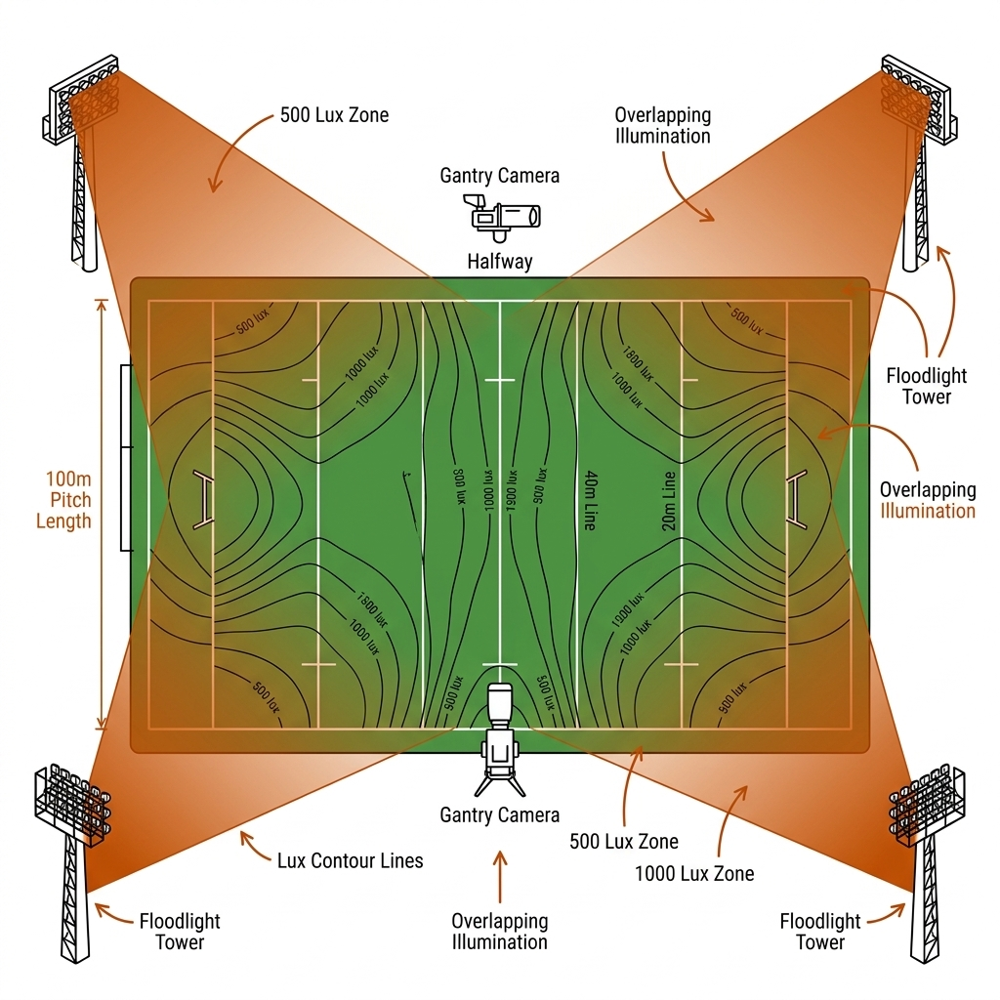
Payoff: the night-game decision becomes explicit — shape analysis at 1/500s or ball analysis with added light — instead of a noisy compromise that serves neither.
UC 06 — Indoor LED Flicker: The Pickleball Venue Tax
The problem. Most pickleball is played indoors under LED panels, and a rolling-shutter camera at 1/1000s turns mains-frequency LED flicker into moving dark bands that corrupt background subtraction and optical flow. The mechanism. LEDs on AC pulse at twice mains frequency — 100Hz in Australia, 120Hz in the US — and PWM-dimmed fixtures flicker worst at low dim levels. The exposure must be an integer multiple of the flicker period to keep bands static: 1/1000s is exactly 10.0 cycles at 100Hz (benign in Australia) and 8.33 cycles at 120Hz (bands badly in the US). The mitigation ladder, in order: (1) ask the venue for full brightness — flicker-free by dimmer position; (2) lock shutter to a flicker multiple and stabilize the bands; (3) shoot 1/100–1/120s and give up ball blur, acceptable for pose and tactics only. The 60-second test: record 10s at 1/1000s under match lighting and scrub for bands.
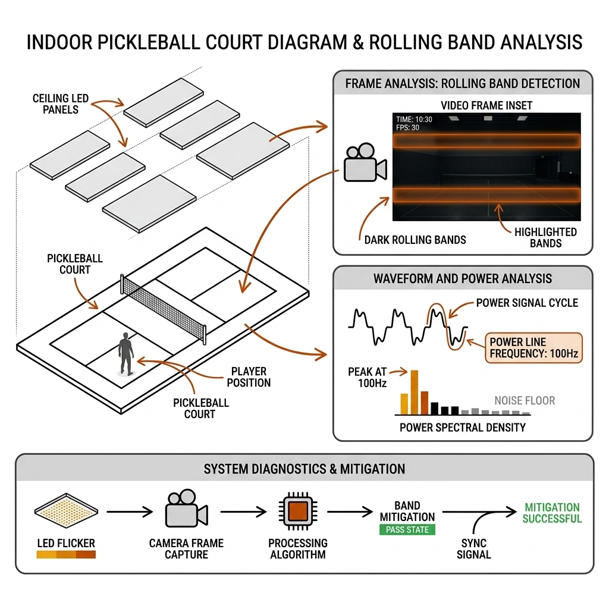
Payoff: a 10-second phone clip per venue replaces a week of debugging "unstable" detectors that were never the problem.
UC 07 — Shutter Speed vs Motion Blur: The 40mm Smear Budget
The problem. A ball at serve speed crosses its own radius in about a millisecond; whether your footage contains a ball or a streak is decided entirely by the shutter dial. The mechanism. Blur is $b = v \cdot t$: a 31.3m/s serve smears 31mm at 1/1000s, 125mm at 1/250s, and 522mm at 1/60s — the last being seven ball diameters. The derived rule (measured inputs, section 4.5): keep smear under one ball radius (37mm), i.e. $t \le 37\text{mm}/v$, which forces ≥1/845s at serve speed → standardize on 1/1000s. In pixels on the lab's 48mm-eq rig (3.1mm/px) that is an 11px streak at 1/1000s versus 43px at 1/250s — the former keeps the centroid inside the ball, the latter smears it across a court line. The same budget governs RL: a ~27m/s kick [verify] smears 27mm at 1/1000s, and player bodies at ≤10m/s are an order of magnitude cheaper to freeze.
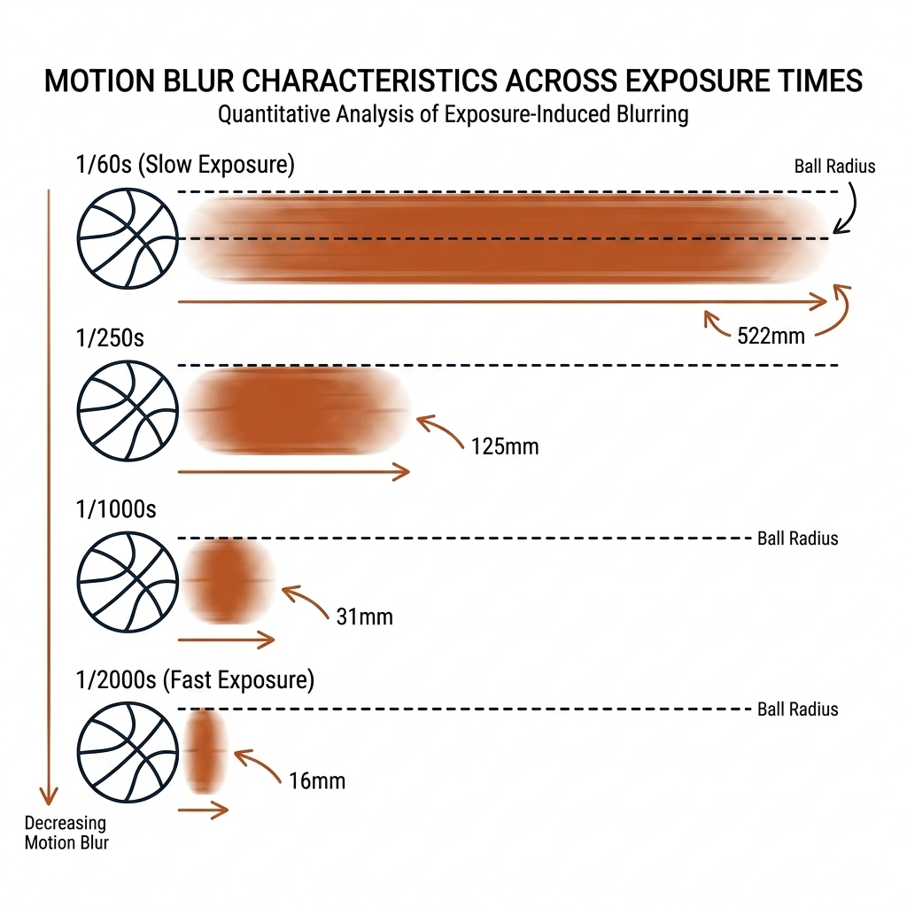
Payoff: set the shutter for the fastest object you care about and the Ball Wall of Chapter 12 mostly disappears — the cheapest model upgrade is a faster shutter.
UC 08 — Frame Rate Choice: 25, 60, or 120
The problem. Frame rate is usually chosen by what the deliverable looks like; it should be chosen by the shortest event you must catch. The mechanism. Between-frame sampling is a Nyquist problem with a concrete window: paddle–ball contact lasts ~3–4ms, so the probability of catching a contact frame at all is $P \approx w \cdot f$ for window $w$ and frame rate $f$ — 12% at 30fps, 24% at 60fps, 48% at 120fps, 96% at 240fps (measured math, section 4.6). Displacement tells the same story in diameters: the 31.3m/s serve travels 14 ball diameters per frame at 30fps — track association becomes guesswork — versus 1.8 at 240fps. Australian broadcast heritage pins RL to the 50Hz family (25/50fps), and the 28cm RL ball tolerates it: 540mm per frame at 50fps is only 1.9 ball lengths. Choose by event window: 30fps tactics, 60fps ball work, 120fps contact, 240fps line-call grade.
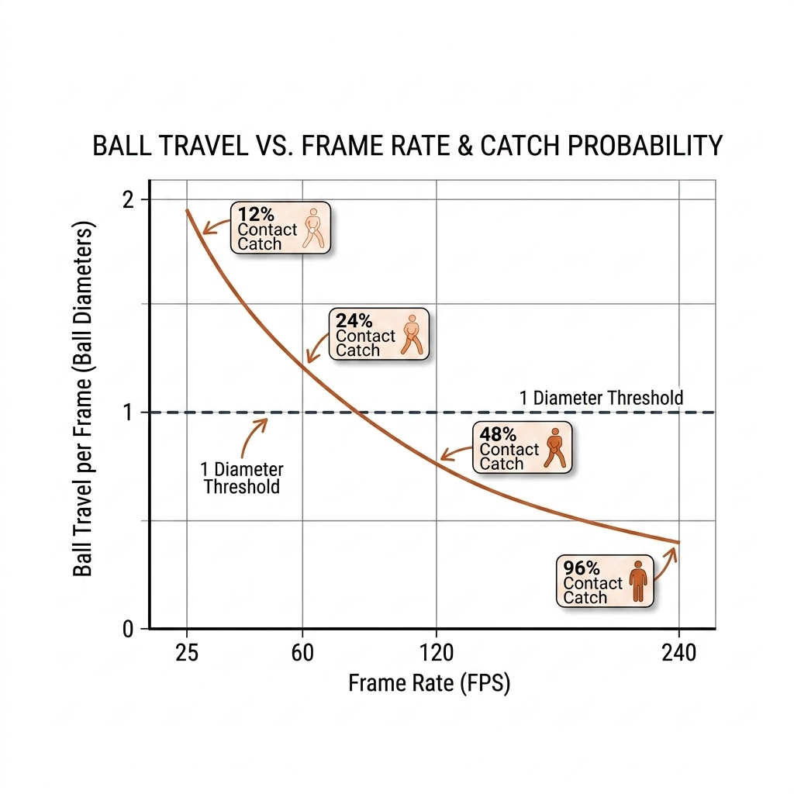
Payoff: every doubling of frame rate doubles ingest cost (Chapter 5) — buying exactly the frame rate the event window demands, and no more, is a budget decision with a formula attached.
Group C: Feeds and Sync (09–10)
UC 09 — Camera Sync for Multiview: Feeding Chapter 14
The problem. Chapter 14's triangulation needs two cameras looking at the same instant; two phones recording the same rally are not that, by default. The mechanism. Consumer clocks drift 10–20ppm ≈ 1ms per minute — up to ~100ms (3 frames at 30fps) over an hour — so a clap sync at the start of a session is stale by the end. The honest ladder: (1) clap/flash sync at start and end, measure the drift rate, stretch one timeline (free, ±half frame); (2) re-clap every 15–20 minutes on long sessions; (3) audio-transient alignment — paddle–ball impact is a ~2kHz transient in every mic track, free ground truth; (4) genlock via iPhone 17 Pro + Blackmagic ProDock ($295, BNC) for true phase lock (source-backed, Sep 2025 release). What never works: HDMI latency as a sync reference — it is 30–100ms and variable. For line-call triangulation the error budget is brutal: at 31.3m/s a half-frame at 60fps is 260mm of disagreement between views.
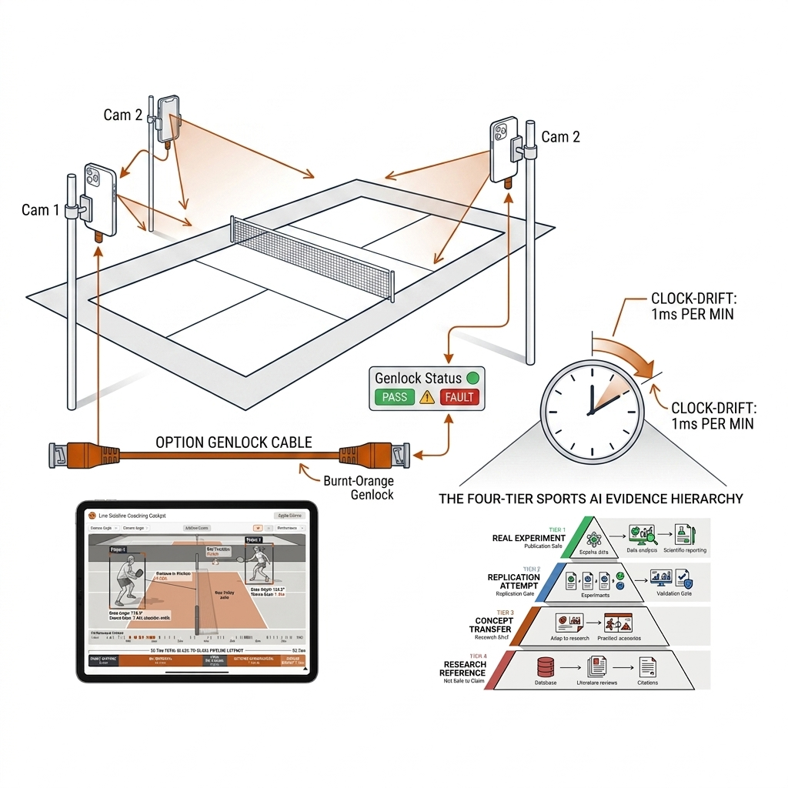
Payoff: sync discipline is what separates a two-camera rig from two unrelated videos — and it costs one clap per 20 minutes.
UC 10 — The Ingest Path: Feeding Chapter 5
The problem. Capture ends at the card; the dataset chapter (5) begins at a folder of files — and everything in between is where footage silently rots. The mechanism. The lab path is five stages, each with one job and one failure mode: (1) offload with checksums, two copies before any card is wiped — a corrupt card found later is unrecoverable data loss; (2) manifest at capture time — filename YYYY-MM-DD_venue_camA_fps_shutter_codec.ext plus a metadata row (camera, equivalent mm, height, setback, fps, shutter, ISO, codec, color mode); (3) transcode for access pattern — long-GOP HEVC for archive, ProRes 422 or image sequences for anything frame-indexed, because random access on long-GOP files is the #1 cause of off-by-a-few-frames labels (measured cost: 1h 4K60 ProRes 422 HQ ≈ 793GB vs 9–14GB HEVC); (4) tone-map HDR masters to SDR BT.709 before inference — iPhone Dolby Vision PQ frames fed raw to an sRGB-trained model apply an unknown per-frame tone curve [verify — the mAP delta is asserted, not yet benchmarked]; (5) hand off to Chapter 5 with the manifest row as the join key.
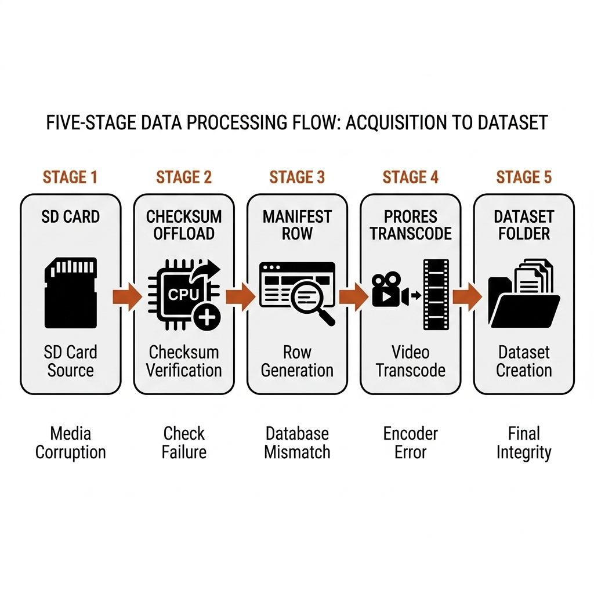
Payoff: the ingest path is the difference between a dataset and a pile of clips — every downstream metric in this book stands on stage 3's frame accuracy.
4.10d What This Adds to the Pipeline
These ten use cases are the capture layer's contract with the rest of the book. UC 01 and UC 04 produce the fixed-calibration pickleball footage that chapters 8 (detection), 9 (tracking), 11 (pose), and 12 (ball) all assume; UC 02 and UC 05 define the ownable RL data source that feeds the tactical chapters (22–23) when no host feed exists. UC 03 is the front door of the broadcast thread — its variable-focal feed is the reason chapters 6–7 calibrate per frame and Chapter 19 treats shot changes as first-class events. UC 07 and UC 08 are the upstream fix for Chapter 12's Ball Wall: shutter and frame rate chosen by formula, not by default. UC 09 is the enabling constraint for Chapter 14's multi-view triangulation, and UC 10 hands Chapter 5 a manifest-joined, frame-accurate master. The honest labels carry forward: measured math (FOV, blur, elevation, drift) is load-bearing; the [verify] items — per-model rolling-shutter readout, HDR-to-model accuracy delta, PlayReplay fps, Hawk-Eye's current figures — are listed in section 4.11 as the lab's open measurements.
4.11 What I Would Measure Next
- Shoot a 4-second test on YOUR court at 1/60 vs 1/1000 and compare ball blur visually — this 10-minute test makes the chapter's math personal.
- Measure the actual parallax with a two-camera setup (a ball on a string 20cm above the line at 0.5m out; compare both camera projections).
- Measure rolling-shutter readout on the lab's actual devices: film a known-frequency LED strobe, count bands, publish the per-model $t_r$ table the vendors don't.
- Run the HDR→CV experiment: same clip as SDR, naive-PQ, and tone-mapped; report detector mAP and pose PCK deltas so section 4.7's distribution-shift claim becomes measured.
- Survey venue flicker: the 10-second 1/1000s test across a dozen real pickleball venues in 50Hz and 60Hz countries, published as a reference table.
- Rugby league: log focal-length drift across one full NRL broadcast half (frame-by-frame homography residuals) to quantify how variable the host feed's zoom really is — the number that sizes Chapter 7's calibration budget.
4.12 Sources
- USAP Official Rulebook 2026 — court 13.41×6.10m, NVZ 2.13m, net 0.86/0.92m: https://usapickleball.org/docs/rules/USAP-Official-Rulebook.pdf ; Equipment Standards Manual Rev 3 (Jan 2025) — ball 73–75mm, 22.1–26.5g.
- Guinness World Records — fastest pickleball serve 70mph (31.3 m/s), Zane Navratil, 2024-09-13: https://www.guinnessworldrecords.com/world-records/772808-fastest-pickleball-serve-male
- Apple — iPhone 16 Pro tech specs (4K120 Dolby Vision, ProRes 4K120 external SSD): https://support.apple.com/en-au/121031 ; About Apple ProRes data rates: https://support.apple.com/en-us/102207
- Blackmagic — Camera ProDock for iPhone 17 Pro (BNC genlock/timecode, $295, Sep 2025): https://www.blackmagicdesign.com/media/release/20250910-01
- Sony — A9 III global shutter, 4K120, $5,999 (Nov 2023): https://www.sony.com.au/interchangeable-lens-cameras/products/ilce-9m3
- Veo — Cam 3 pricing and halfway-line setup guidance: https://www.veo.com/pricing ; https://support.veo.com/hc/en-us/articles/5922516538897
- Prices verified 2026-08-30: PlaySight ~$10–15k/court [verify quote], Veo Cam 3 $1,299+subscription, Insta360 X5 ~$550.
- Lab:
lab/w1_lab_capture.py→experiments/c04-capture/outputs/capture-math.json(FOV, blur, elevation, parallax, RL broadcast focal numbers). - Probe: pb-003 clip = AV1 1920×1080 @30fps 955 frames 1,786kbps (ffprobe).
- Full dossier with per-topic sources:
book-research/Research Briefs/2026-08-30-c04-capture-hardware.md.